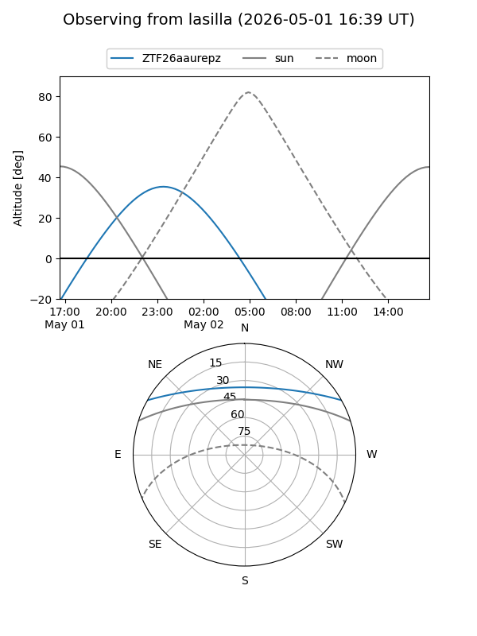
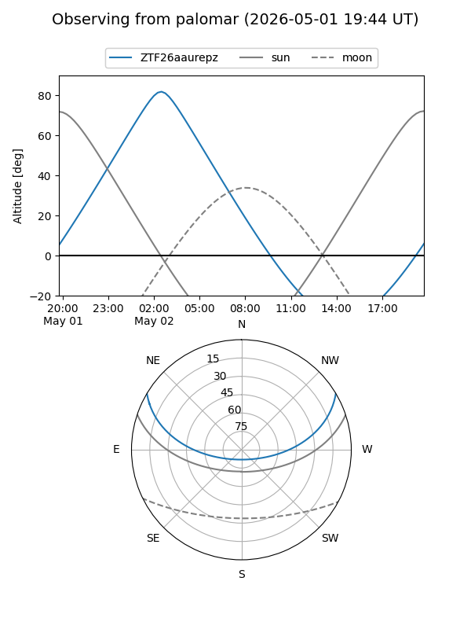

ZTF26aaurepz
Target ZTF26aaurepz at 2026-05-02 04:38
Aliases and brokers:
FINK: link
Lasair: link
ALeRCE: link
alt names
ZTF26aaurepz (ztf,fink_ztf)
Coordinates:
equatorial (ra, dec) = 139.7023,+25.38758
equatorial (HMS+DMS) = 09:18:48.56,+25:23:15.28
galactic (l, b) = (202.3891,+42.65785)
Flags:
Photometry:
last ztfg=19.51
1 ztfg detections
Lightcurve
Visibility


Additional plots